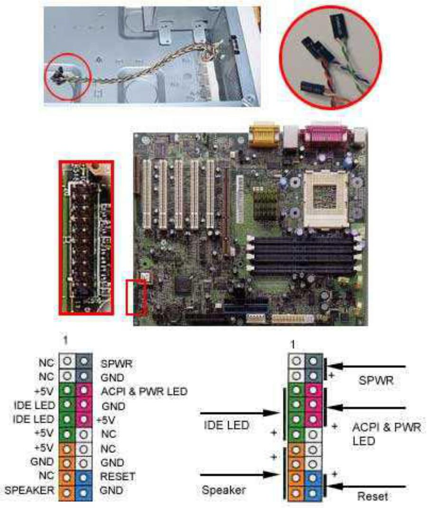
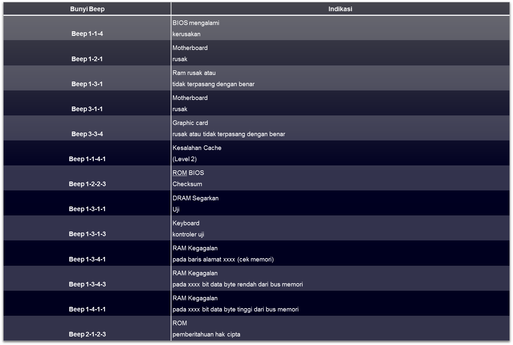

Penyiapan motherboard
Periksa buku manual motherboard untuk mengetahui posisi jumper untuk pengaturan CPU speed, speed multiplier dan tegangan masukan ke motherboard. Atur seting jumper sesuai petunjuk, kesalahan mengatur jumper tegangan dapat merusak prosessor.
Memasang Prosessor
Prosessor lebih mudah dipasang sebelum motherboard menempati casing. Cara memasang prosessor jenis socket dan slot berbeda.
Jenis socket
- Tegakkan posisi tuas pengunci socket untuk membuka socket.
- Pada di bagian sudut CPU terdapat tanda yang sama dengan socket CPU, umumnya ditandai dengan titik, segitiga atau lekukan. Pasang CPU ke dalam socket dengan menyocokan tanda tersebut.
- Masukkan prosessor ke socket dengan lebih dulu menyelaraskan posisi kaki-kaki prosessor dengan lubang socket. rapatkan hingga tidak terdapat celah antara prosessor dengan socket.
- Berikan pasta thermal atau gel secukupnya di atas CPU untuk menyalurkan panas dari CPU ke heatsink.
- Turunkan kembali tuas pengunci.
Jenis Slot
- Pasang penyangga (bracket) pada dua ujung slot di motherboard sehingga posisi lubang pasak bertemu dengan lubang di motherboard
- Masukkan pasak kemudian pengunci pasak pada lubang pasak
- Selipkan card prosessor di antara kedua penahan dan tekan hingga tepat masuk ke lubang slot.
Memasang heatsink
- heatsink dipasang diatas CPU dan dikunci menggunakan sekrup.
- Bila heatsink dilengkapi dengan fan maka konektor power pada fan dihubungkan ke konektor fan pada motherboard.
Memasang Modul Memori (RAM)
Modul memori umumnya dipasang berurutan dari nomor socket terkecil. Urutan pemasangan dapat dilihat dari diagram motherboard. Setiap jenis modul memori yakni SIMM, DIMM dan RIMM dapat dibedakan dengan posisi lekukan pada sisi dan bawah pada modul. Cara memasang untuk tiap jenis modul memori sebagai berikut:
Jenis SIMM
- Sesuaikan posisi lekukan pada modul dengan tonjolan pada slot.
- Masukkan modul dengan membuat sudut miring 45 derajat terhadap slot
- Dorong hingga modul tegak pada slot, tuas pengunci pada slot akan otomatis mengunci modul.
Jenis DIMM dan RIMM
Cara memasang modul DIMM dan RIMM sama dan hanya ada satu cara sehingga tidak akan terbalik karena ada dua lekukan sebagai panduan. Perbedaanya DIMM dan RIMM pada posisi lekukan
- Rebahkan kait pengunci pada ujung slot
- Sesuaikan posisi lekukan pada konektor modul dengan tonjolan pada slot.lalu masukkan modul ke slot.
- Kait pengunci secara otomatis mengunci modul pada slot bila modul sudah tepat terpasang.
Memasang Motherboard pada Casing
Motherboard dipasang ke casing dengan sekerup dan dudukan (standoff). Cara pemasangannya sebagai berikut:
- Tentukan posisi lubang untuk setiap dudukan plastik dan logam. Lubang untuk dudukan logam (metal spacer) ditandai dengan cincin pada tepi lubang.
- Pasang dudukan logam atau plastik pada tray casing sesuai dengan posisi setiap lubang dudukan yang sesuai pada motherboard.
- Tempatkan motherboard pada tray casing sehinga kepala dudukan keluar dari lubang pada motherboard. Pasang sekerup pengunci pada setiap dudukan logam.
- Pasang bingkai port I/O (I/O sheild) pada motherboard jika ada.
- Pasang tray casing yang sudah terpasang motherboard pada casing dan kunci dengan sekerup.
Memasang Power Supply
Beberapa jenis casing sudah dilengkapi power supply. Bila power supply belum disertakan maka cara pemasangannya sebagai berikut:
- Masukkan power supply pada rak di bagian belakang casing. Pasang ke empat buah sekerup pengunci.
- Hubungkan konektor power dari power supply ke motherboard.Konektor power jenis ATX hanya memiliki satu cara pemasangan sehingga tidak akan terbalik.Untuk jenis non ATX dengan dua konektor yang terpisah maka kabel-kabel ground warna hitam harus ditempatkan bersisian dan dipasang pada bagian tengah dari konektor power motherboard. Hubungkan kabel daya untuk fan, jika memakai fan untuk pendingin CPU.
Memasang Kabel Motherboard dan Casing
- Pasang kabel data untuk floppy drive pada konektor pengontrol floppy di motherboard
- Pasang kabel IDE untuk pada konektor IDE primary dan secondary pada motherboard.
- Untuk motherboard non ATX. Pasang kabel port serial dan pararel pada konektor di motherboard. Perhatikan posisi pin 1 untuk memasang.
- Pada bagian belakang casing terdapat lubang untuk memasang port tambahan jenis non slot. Buka sekerup pengunci pelat tertutup lubang port lalumasukkan port konektor yang ingin dipasang dan pasang sekerup kembali.
- Bila port mouse belum tersedia di belakang casing maka card konektor mouse harus dipasang lalu dihubungkan dengan konektor mouse pada motherboard.
Hubungan kabel konektor dari switch di panel depan casing, LED, speaker internal dan port yang terpasang di depan casing bila ada ke motherboard. Periksa diagram motherboard untuk mencari lokasi konektor yang tepat.

Memasang Drive
Prosedur memasang drive hardisk, floppy, CD ROM, CD-RW atau DVD adalah sama sebagai berikut:
- Copot pellet penutup bay drive (ruang untuk drive pada casing)
- Masukkan drive dari depan bay dengan terlebih dahulu mengatur seting jumper (sebagai master atau slave) pada drive.
- Sesuaikan posisi lubang sekerup di drive dan casing lalu pasang sekerup penahan drive.
- Hubungkan konektor kabel IDE ke drive dan konektor di motherboard (konektor primary dipakai lebih dulu)
- Ulangi langkah 1 samapai 4 untuk setiap pemasangan drive.
- Bila kabel IDE terhubung ke drive pastikan perbedaan seting jumper keduanya yakni drive pertama diset sebagai master dan lainnya sebagai slave.
- Konektor IDE secondary pada motherboard dapat dipakai untuk menghubungkan dua drive tambahan.
- Floppy drive dihubungkan ke konektor khusus floppy di motherboard
- Sambungkan kabel power dari catu daya ke masing-masing drive.
Memasang card Adapter
Card adapter yang umum dipasang adalah video card, sound, network, modem dan SCSI adapter. Video card umumnya harus dipasang dan diinstall sebelum card adapter lainnya.
Cara memasang adapter:
- Pegang card adapter pada tepi, hindari menyentuh komponen atau rangkaian elektronik. Tekan card hingga konektor tepat masuk pada slot ekspansi di motherboard
- Pasang sekerup penahan card ke casing
- Hubungkan kembali kabel internal pada card, bila ada.
Penyelesaian Akhir
- Pasang penutup casing dengan menggeser
- Sambungkan kabel dari catu daya ke soket dinding.
- Pasang konektor monitor ke port video card.
- Pasang konektor kabel telepon ke port modem bila ada.
- Hubungkan konektor kabel keyboard dan konektor mouse ke port mouse atau poert serial (tergantung jenis mouse).
- Hubungkan piranti eksternal lainnya seperti speaker, joystick, dan microphone bila ada ke port yang sesuai. Periksa manual dari card adapter untuk memastikan lokasi port.
PENGUJIAN
Komputer yang baru selesai dirakit dapat diuji dengan menjalankan program setup BIOS. Cara melakukan pengujian dengan program BIOS sebagai berikut:
- Hidupkan monitor lalu unit sistem. Perhatikan tampilan monitor dan suara dari speaker.
- Program POST dari BIOS secara otomatis akan mendeteksi hardware yang terpasang dikomputer. Bila terdapat kesalahan maka tampilan monitor kosong dan speaker mengeluarkan bunyi beep secara teratur sebagai kode indikasi kesalahan. Periksa referensi kode BIOS untuk mengetahui indikasi kesalahan yang dimaksud oleh kode beep.
- Jika tidak terjadi kesalahan maka monitor menampilkan proses eksekusi dari program POST. ekan tombol interupsi BIOS sesuai petunjuk di layar untuk masuk ke program setup BIOS.
- Periksa semua hasil deteksi hardware oleh program setup BIOS. Beberapa seting mungkin harus dirubah nilainya terutama kapasitas hardisk dan boot sequence.
- Simpan perubahan seting dan keluar dari setup BIOS. Setelah keluar dari setup BIOS, komputer akan meload Sistem OPerasi dengan urutan pencarian sesuai seting boot sequence pada BIOS. Masukkan diskette atau CD Bootable yang berisi sistem operasi pada drive pencarian.
PENANGANAN MASALAH
Permasalahan yang umum terjadi dalam perakitan komputer dan permasalahan tersebut memiliki indikator berupa beep code :
Bunyi Beep Pada AMI BIOS
Bunyi Beep Pada Award BIOS
Beep Pada Phoenix BIOS

Beep Pada IBM BIOS